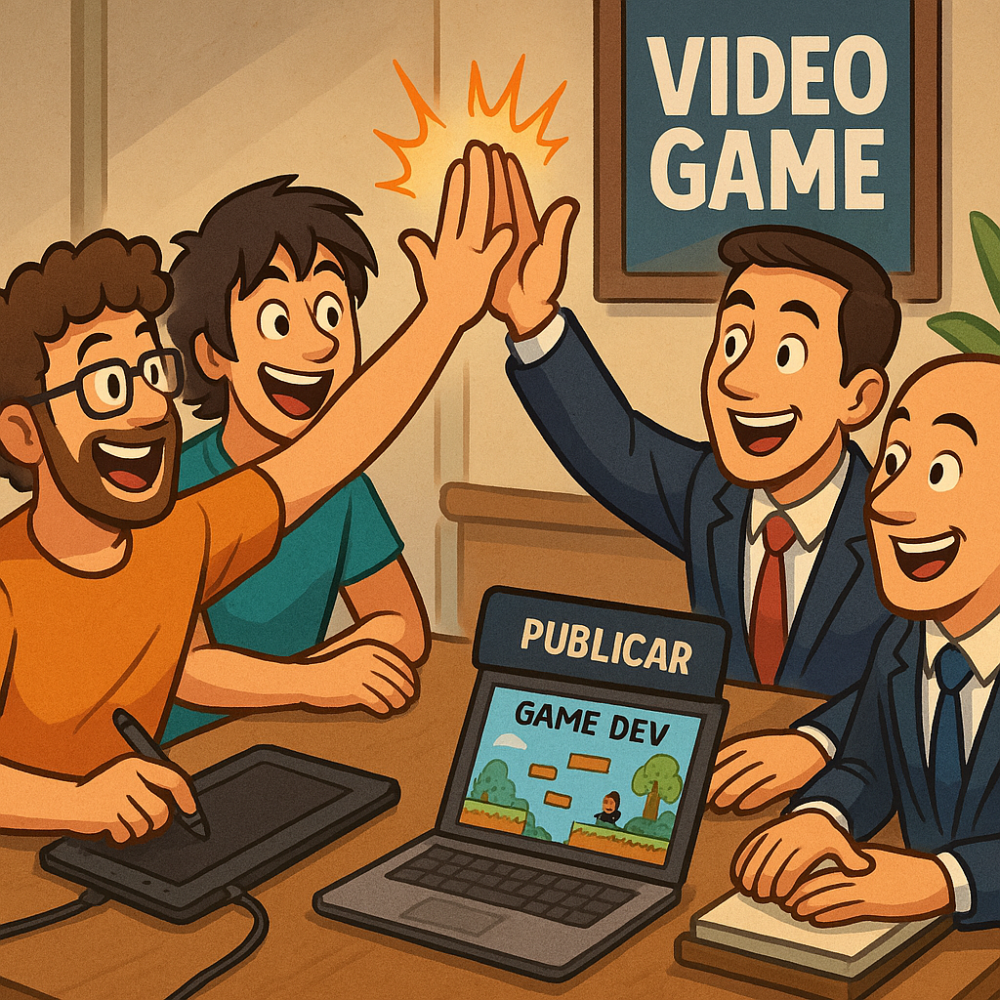

Below is my Week 5.0 Teachback Journal:
- Tasks performed this week included:
- Reviewed Course Material and Powerpoint Lectures on Intellectual Property and Contracts
- Attended Live Class Lectures
- Updated Teachback Journal Website
- Research & Analysis on Work for Hire and Publisher Contracts (Discussion 5.1 & 5.2)
- Further Explored my Topic Selection for my Final Paper
- Copyrighting
- Copyright and trademark enforcement can be really expensive when infringed upon – but the reward for pursuing it may be worth it.
- You need to be really careful to also not violate copyright laws yourself in your own game development.
- Fair use copyright infringement can be extremely complicated.
- License and enforce your contracts and IP as best as you can – don’t be afraid to do so – it is an important aspect of game development.
- Trademarks
- Trademark rights do not take affect until you have actually sold official copies of the game you have developed. You can however register for a trademark in advance to reserve that IP for up to 3 years – you do have to actually sell in the future to actually get the rights.
- Registering a trademark is best done with strong legal help and should not be over looked. Also utilize legal help when sending down take down requests or cease and desist orders. Suing is very expensive.
- Register your trademark as soon as you can if you intend to have value in your brand and trademark.
- Avoid infringement – do your research and proper due diligence to avoid future heartache. Plan ahead.
- Patents
- Not worth it for indies.
- Can be really expensive and difficult to obtain.
- Seek legal help if you feel this is necessary.
- Trade Secrets
- Use reasonable efforts to keep things secret.
- Enforce NDAs.
- Simply don’t expose your secrets openly to the world.
- Right of Publicity
- Name, Image, Likeness can be very tricky.
- Avoid where possible to avoid issues.
- Contract Work: Lots of opportunities out there to help work on other projects and further other game development.
- Porting, Consulting and Bug Fixes: Finding work to help others out there finish and release their gaming project.
- Non-Game Software Development: Focusing where other software development and coding demands are prevalent – outside of the gaming industry. May have to focus here and push ‘game-development’ as a side-project.
- "Many Small Projects": Small achievable goals allow you to accomplish smaller project to really showcase your game development skills and game’s creative idea.
- Asset Stores and Assets: Monetizing other aspects of your game.
- Social Media / Teaching / Training / etc.: Utilizing the process of developing your game and monetizing it in other ways – such as social media or as educational development.
- Henchman & Goon, a studio based in Bergen, Norway, has released three games: Flem, PodE, and Pode:Kids. They started working on Pode, an ambitious project, in 2015 and launched it on the Nintendo Switch in 2018, where it initially performed poorly.
- Survival Philosophy: The studio operates on the principle that ‘artists too need to eat’ - meaning that they must be practical and responsible to sustain themselves. In their early years, they took on contract work to survive while developing their first game, Flem.
- Studio Split and Funding: A difference in vision led to a friendly split of the company, with Yngvill’s group focusing on game development. After four years of effort, they secured funding to focus on Pode.
- Redefining Success: The initial failure of Pod was disheartening, but the game's sales slowly improved over time, eventually recovering its costs by 2022. This led the studio to shift its priorities from sales numbers to:
- Survival - Ensuring the well-being and work-life balance of the team.
- Enjoying the Process - Always finding joy in the creation of art.
- Managing Expectations - planning for the possibility of failure to ensure the team's happiness and safety. Always be clear and open about your true intentions and capabilities.
- Community and Continued Success - the long-term success of Pode she attributes to its quality, positive reviews, and a strong community.
- Love What You Make - enjoy the process doing it.
- Remember to act like a business - Don't neglect the business aspects of running a studio, such as legal matters and accounting.
- Diversity in your team - client work provides stable income, allowing for a more diverse and talented team.
- Prepare! - Have at least a year of funds before you start, secure credit while you're still employed, and get a mentor.
- Finding Client Work - Always be networking! Offer solutions instead of just labor, and look for clients in games-adjacent industries.
- Balance is a Challenge - Be aware that client work can be creatively draining and that splitting time between client projects and your own games doesn't mean you'll finish your own games any faster or slower.
- The Indie Reality - Most indie games are not huge successes. The key is to find a way to survive in the middle ground.
- Leverage New Hardware - Developing for new hardware can lead to funding from manufacturers.
- Pro Tip: Utilize lesser-known platform to get your name known and to show your development capabilities.
- Use IP Partnerships - Partnering with existing intellectual property holders can open doors and help you build relationships.
- Project Management - Be Strategic! Use smaller projects like expansion packs for a steady income stream and stick to a specific genre to maximize your ROI (return on investment).
- Know Your Audience and Stick to What you Know (Stick to a Genre) - It's easier to make games for an existing player base than to build one from scratch.
- Diversify Your Income – She too stresses the idea to not rely solely on game sales.
- Pro Tip: supplement your income with things like:
- Grants,
- Work-for-hire
- Partnerships
- Pro Tip: supplement your income with things like:
- Long-term survival - the goal is to continuously improve your games, which requires the studio to survive and the team to be happy.
- Be opportunistic and diversified - Be open to different funding sources to ensure survival, which will lead to a variety of games and revenue streams.
- Centralize Your Brand - Focus on building a community around your studio's brand, not just individual games.
- Community! Engage with Your Fans - Once again stressing the importance of community development - actively connect with your fans to build a strong relationship with your studio.
- Financial Transparency and Diversification - Game sales are not the only sources of income. Kitfox Games also utilizes:
- Kickstarter
- Outside investments
- Contract work
- Lots of odds and ends to help boost the bottom line – even just by a little.
- Tasks performed this week included:
- Reviewed Course Material and Powerpoint Lectures on Publishers
- Attended Live Class Lectures
- Updated Teachback Journal Website
- Wrote and Justified by Rational for Self-Publishing for Class Discussion 4.1
- Explored Topic Selection for my Final Paper for Assignment 4.1
- You had to sell physical copies of your game.
- There were no ways to download and pay for games online.
- Placement and marketing of your physical game were important sales factors.
- Distribution
- Price/Cost & Profit Sharing
- Project Management
- Platform Standardization
- They want to get a quality product to market as successfully as possible.
- They are profit-seeking and want to get the best ROI as possible.
- They want to publish to as many platforms and in as many languages as possible.
- They push timelines and can assist with project management.
- They may already have the market access and knowledge you need.
- They may have Intellectual Property (IP) rights and expertise to pass on to your game/project.
- They worry about brand standards and brand management.
- They want your game to be as successful as possible so they can make as much money as possible.
- Research and due diligence will help mitigate this and help you select the best publishers that fit you.
- Exploring the Developer + Publisher = Partnership
- The importance of trust and long-term relationship development.
- Trust is a rare commodity in the relationship between game development and publishers and is extremely important. Get to know your publisher well (previous games, marketing, business philosophy, etc.).
- Marketing is an important dynamic in the relationship between publishers and developers. Publishers take over and have a huge say in the marketing aspects of game development. Trust your publisher has the experience and know-how to run a successful marketing campaign.
- Utilize your 'power gamers' to extract solid and useful marketing material and game development inputs. Communication (even small amounts) is crucial.
- Under-promise and exceed expectations. Do not over-promise anything. Be 100% certain that what you are marketing about the game ends up in the actual game.
- Remember—marketing is not everything. You also must produce a quality game and product to back up good quality marketing.
- Gameplay (focuses your efforts on core features)
- Miscalculation minimization—a more specific scope allows for mitigation when miscalculations in development happen.
- Iterate features—discover what resonates with your game players.
- Helps in the business development side of the project.
- Keeping the money close to the developers also provides and creates an avenue for strong and improved communication to limit friction.
- Mitigates risk.
- Allows you to ensure ROI on what works.
- Pleases investors.
- Marketing also benefits from a limited scope.
- Allows developers to focus on features that the target audience is vocal about.
- Smaller releases allow you to act and not just react quickly to new releases and developments in the game.
- Gives marketing an easier time and way to say “THIS GAME IS FUN!”
- When you are broke and need money for further game development.
- When you are seeking/needing marketing and sales support.
- When your knowledge of the specific industry & market is limited.
- Allows you to focus on just development—publishers can provide all of the other important parts that are needed for successful development and release.
- What you are making
- Audience
- The Pitch itself
- Key-deliverables and takeaways
- Be realistic with your sales projections (you will likely not sell/release beyond 30,000 copies)—manage realistic expectations.
- Prototypes are simply proof that you are working on something.
- Publishers do not pay for prototypes.
- Multiple prototypes are necessary to establish proof of concept.
- Create a 'vertical slice' prototype to prove proof of concept to excite publishers.
- Steam as an example:
- $100 'Bet' initially that your game will get off the ground.
- SteamWorks includes a plethora of features and benefits to utilizing their platform (i.e., player data, matchmaking abilities, multiplayer functionality, etc.).
- Provides access to a large market and audience.
- Steam does 'Marketing' for your game.
- A store page is provided.
- Steam gets 30% and wants you to succeed and be successful so they can make money as well.
- Epic Games Store:
- Epic only takes 12%.
- 0% until you make $1 MILLION a year.
- Epic Online Services
- Similar to SteamWorks but not as exhaustive.
- Exclusivity deals.
- Epic will 'advance' funds to games in development in some cases to help them reach completion.
- The money advance will need to be paid back.
- Epic may require exclusivity for a set amount of time.
- Epic is willing to eat fees (like credit card) for smaller games in hopes that big games will be attracted to and developed on the Epic Games store platform—and they will be able to really cash in on those big hit games.
- Epic only takes 12%.
- NO Marketing Support
- NO Free Partnerships
- Access to some funding (like 'advances on royalties')
- Self-publishing requires a lot of self-direction and self-initiative.
- The release and announcement process of a game is an integral part of development and should not be taken lightly.
- Getting potential players interested in your game requires a lot of communication and ground-level connection. Feedback is crucial.
- Grass-roots push for game recognition requires a lot of work on your part without a publisher. To be successful, be prepared to do a lot of 'cold calling' to get your game out there and known.
- The actual launch of a game requires a lot of planning and preparation—and will be extremely stressful.
- Am I capable of releasing this game on my own without outside support?
- Can I pull this off with a reasonable amount of success?
- Could someone else do this for you? (PR Company)
- HardBoiled Studios. (2024). YOLKED (The Egg Game) [Video game]. Hitcents. Retrieved from https://store.steampowered.com/app/1464010/YOLKED__The_Egg_Game/
- Park, H. (2024, May 22). The grim reality for independent game developers and publishers: Surviving the challenges ahead. Game Developer. https://www.gamedeveloper.com/business/the-grim-reality-for-independent-game-developers-and-publishers-surviving-the-challenges-ahead
- News Staff. (2020, November 18). Undergrad game developers sign video game development deal. University of Michigan, Computer Science and Engineering. https://cse.engin.umich.edu/stories/undergrad-game-developers-sign-video-game-development-deal
- Research Focus: Trace the history and legacy of the GoldSrc engine. Discuss how Valve's approach to game development and their support for modders led to the creation of iconic titles like Counter-Strike and Day of Defeat. I will explore the argument that Half-Life's success as a platform for modding fundamentally changed the relationship between developers and their player base, paving the way for a new era of community-driven content.
- Key Concepts to Explore: Game engines, modding, community development, platform development
- Addresses Course Objective 4
- Research Focus: Analyze how Steam's rise challenged and ultimately changed the traditional retail model of game distribution. Discuss the advantages for developers (i.e. lower production and shipping costs, direct relationship with players) and for consumers (i.e. instant access, automated updates). I will explore the criticisms, such as the loss of game ownership in favor of licenses and the impact on the used game market.
- Key Concepts to Explore: Digital rights management (DRM), distribution models, retail vs. digital, consumer rights
- Addresses Course Objectives 4, 5
- Research Focus: Investigate the strategies students use to overcome these resource limitations. Discuss the importance of using free assets, open-source game engines (like Godot), and a focus on minimalist art styles to create polished games. I will explore how these constraints can sometimes lead to more innovative and focused game design decisions, as developers are forced to prioritize core gameplay over graphical fidelity.
- Key Concepts to Explore: Frugal innovation, resource management, minimalist design, asset pipelines, indie development.
- Addresses Course Objectives 4
Journal:
Lecture 5.1: Intellectual Property
What is IP?
Ideas or intangible creations that can be owned solely by an individual. Based on the idea that government can control who is able to utilize the idea. Examples include trade secrets, copyrights, trademarks, patents, etc.
IP: Trade Secret
Just keep the process or some aspect of the product secret (like a secret recipe). These are free to have but extremely hard to keep in today’s gaming industry because of the prevalence of hacking, digital leaks, reverse engineering, etc.
NDAs (Non-Disclosure Agreements) can be used to attempt to mitigate and protect trade secrets but are not fool proof.
IP Type: Copyright
Exclusive rights given to the creator of some type of creative work fixed in a tangible form of expression. Typically has a limited time period. Originally it just meant the right to copy the work – now in most places in the world once it is written down it is copyrighted. In the US you must register the copyright to receive damages. Does not protect just raw ideas – only after they are expressed or fixated.
In the gaming industry copyrighting typically covers a variety of different aspects of the game design and development. The music, art, and code of the game are copyrighted are covered by different areas of US copyright law.
IP Type: Trademark
Historically there was some sort of mark (i.e. phrase, word, symbol or design) allowing you to distinguish between other products. Typically has geographical and industry specific limitations. Needs to be registered in-order to be enforceable.
IP Type: Patent
Used to protect inventions – and therefore can cover some aspects of game development. Allows you to protect and exclude others from making, offering, or selling an ‘invention’ for a certain time frame in the US.
Gives you legal protection but requires a lot of work to get set-up and established. Seek legal advice if this is the avenue you choose.
GDC Talk Take-a-ways (Practical IP Law for Indie Developers 301: Plain Scary Edition):
Lecture 5.2: Other Revenue Sources
GDC Talk: Flopping Successfully: Running a Studio Without a Huge Hit
2023 Talk by Yngvill Hopen, founder of Henchman & Goon
Key takeaways:
Yngvill advises developers to set life goals, not just product goals, and to prioritize self-care and team well-being. She emphasizes that it's not necessary to be ‘number one’ to be successful and that their focus has shifted to taking on interesting contract work with great people.
Remember – game developers too have to eat!
GDC Talk: How to Run a Studio Without a Surprise Hit
2019 Talk by Christopher Langmuir, Theresa Duringer and Tanya X at Anemoney Hug Interactive, Temple Gate Games, and Kitfox respectively.
Chris at Anemone Hug Interactive: Client Work and Original IP
Theresa at Temple Gate Games: Hardware and IP Partnerships
Tanya at Kitfox Games: Diversification and Fan Engagement
There is no single ‘Right Way’ to run A Game Development Company - Every studio is different, and there are many paths to success.
Week 4.0: Publishing
Do you need a publisher? Yes or No
Below is my Week 4.0 Teachback Journal:
Journal:
Module 4.0: Publishing
Lecture 4.1: Why You Need a Publisher
Last week's main takeaway (the professor was gone) was to know the important difference between contractors and employees. Contractors may at first sound like an easier and cheaper route to get a project done—it may not always turn out that way.
Historically:
Today's Publishers
Funding is still a secondary element of funding. The primary goal is to get games to market and the logistics to do so:
Things to consider when dealing with publishers:
When selecting a publisher to work with, make sure you have a GOOD FIT. They can have a huge influence on what game is developed and produced. Make sure the publisher aligns with your mission, vision, values, and goals.
EDC Europe Presentation Notes:
Important takeaway: Limit your scope. Limiting the scope of your game allows you to focus on what is important in your game development. Benefits and insights that come from limiting and focusing scope:
Ideal times to partner with publishers:
Real-world examples talked about in class include No Man’s Sky and Alganon and how their development and interaction with a publisher was crucial in their release and post-release reception.
EDC San Francisco Talk “So You’re Ready to Pitch to a Publisher? – You’re Not”
Before you pitch, make sure that you understand:
Key Talk Takeaways
Lecture 4.2: Why You DON’T Need a Publisher
Games are no longer available in just hard copy and are widely available online for digital download.
Digital distribution is extremely important now, accounting for (>95%) of game distribution. Digital storefronts are much more common and an easy avenue to release games (with or without a publisher).
Self Publishing is now totally possible and feasible:
What does Self Publishing actually cost you?
Publishers have a lot of access to important relationships that really enhance and encourage the development and successful release of games, including areas such as:
GDC Talk: No More Robots – Publishers Guide to Not Need a Publisher
Key Takeaways
Remember to ask yourself:
My Discussion 4.1 Post:
Company Description:
A company founded on developing and releasing student led gaming projects. The company will pilot and test it’s business strategy and structure with a game being developed by UAT students entitled “Rhythm Racer”. That project is outlined and described below.
Project description:
Rhythm Racer is an atmospheric driving rhythm game in which players will enjoy a narrative scenic drive. Depending on the genre of the song each environment will differ giving players variation. While they enjoy not only the challenge of the rhythm of the song there will be a small story paired alongside it. This game is being developed over 15 weeks for a course led by students at UAT. This game is being developed with the Unreal 5 Engine.
Partner with a Publisher?: Yes or No
I have opted to partner with a self-publishing approach at this stage in the business for a variety of reasons. Big digital gaming platforms like Steam can provide essential tools and exposure for even small indie-level games. This is particularly important for this company and project because the company is still working on a ‘proof-of-concept’ to build on and develop further. That concept – building solid business models for student developed games and releasing them – is still being tested and developed with the first project described here.
Self-publishing on Steam gives access to important marketing tools (like a storefront) at a relatively small cost (an initial non-refundable fee of $100 that is recouped if the game gets off the ground). This is very important for this project because the students that are developing this game do not have the marketing and sales knowledge to easily accomplish crucial marketing functions such as building and promoting a store page.
Additionally, working with a publisher allows the students to have a showcase product at the end of the project. Even if the game does not garner much attention – it can still live in the Steam Game Library that the students can than showcase in their portfolios.
Other important features that Steam can provide when self-publishing include access to community engagement features, automatic updating, cloud functionality, and more.
Further Research
After investigating working with publishers, some argue that innovative thinking and artistic vision are not enough anymore to get a game off the ground. The current market is flooded with too many games and not enough visibility for indie-games without large pockets. Publishers are important to partner with because they can provide the raw financial power and a solid marketing strategy that are now essential for survival in the gaming industry. Simply stated – there are too many similar games out there for a low-marketing-budget indie game to be feasibly ‘discovered’.
Upon further research I also stumbled upon a somewhat successful example of a student-led game project being successfully released. Back in 2020 a team of four University of Michigan undergraduate students signed a deal with a publisher (indie label Hitcents) and later released a game called ‘YOLKED – The Egg Game’ on Steam in April, 2023. Success in doing so was largely attributed to the students’ passion for the work they were doing.
Sources:
My Assignment 4.1 Post:
My Objective: Build a business case study to present a game development obstacle and the solution/approach used by the game developers in the form of a research paper.
Gaming Industry Business Case Study Idea 1: Half-Life and Game Modding: The Impact of the GoldSrc Engine on Game Development and the Modding Community
The Valve game Half-Life was built on a modified Quake engine (dubbed GoldSrc) - it was a highly customized and influential engine in its own right. The engine's flexibility and the developer tools provided by Valve allowed for an explosion of community-created mods, many of which became hugely successful standalone games.
Gaming Industry Business Case Study Idea 2: The Steam Platform and The Transition from Physical to Digital Distribution
The Steam platform has fundamentally reshaped the video game industry since its inception. Steam's initial purpose was to streamline the patching process for Valve's own games like Counter-Strike and Half-Life 2, but it quickly evolved into the dominant digital storefront for PC games. This transition was a pivotal moment in the industry.
Gaming Industry Business Case Study Idea 3: Student Led Dev Teams: Overcoming Technical Challenges with Limited Resources
Student developers often work with free tools, limited budgets, and a lack of access to high-end hardware or software. This scarcity forces them to be creative in their approach to game development.